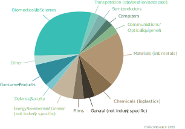
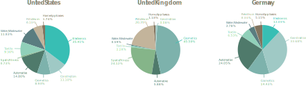

Nanoparticles have existed throughout the history of the world and can even be produced by some organisms. However, intentionally manmade nanoparticles, also called engineered nanoparticles, are somehow new.
Nanotechnology is a field of research that has quickly and greatly developed in the last decades, and the global market is already incorporating this technology into a wide variety of products. Despite that, most of the consumers are not really aware of this and think about nanotechnology as science fiction.
Whatever our opinion on nanotechnology may be, what we don’t realise is that we are exposed to nanoparticles in our everyday life, not only through pollution, but by means of the products we
use daily.
According to an EmTech Research (2005) survey of approximately 600 companies involved in R&D, manufacture, sale, or use of nanotechnology, the top three companies based on the number of
nanotechnology-related patents issued were IBM, Intel, and L’Oreal. Other companies that ranked highly were large, technology-based businesses.
